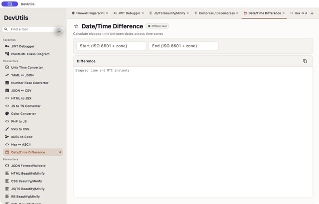

App overview P2
The wide sidebar occupies about one fifth of the window. The tab strip shows a fixed set of earlier tabs while the active Date/Time tool is not visibly identified in it. The right edge cuts off a tab title.
Suggested change: Ensure the active tab scrolls into view; make overflow discoverable and keep sidebar sizing deliberate.
Open full-size screenshot ↗